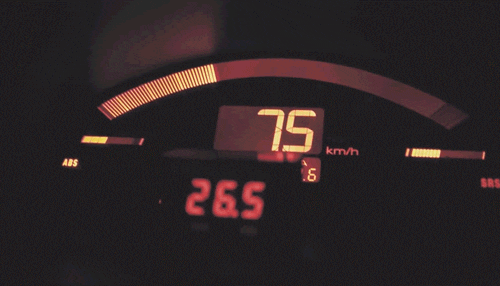

System VTEC
zdjęcie poglądowe:
VTEC (ang. Variable Valve Timing and Lift Electronic Control System) – system kontrolujący czas otwarcia i wznios zaworów w zależności od obrotów silnika, stopnia otwarcia przepustnicy, oraz obciążenia silnika. Wałki rozrządu posiadają po 3 krzywki, które sterują dwoma zaworami: 2 krzywki o jednakowym wzniosie pracują dla niskich prędkości obrotowych oraz na małym obciążeniu, natomiast krzywka o większym wzniosie i bardziej ostrej charakterystyce steruje dwa zawory jednocześnie poprzez spięcie dźwigni zaworowych w jedną całość dzięki dostarczeniu ciśnienia oleju do ich mechanizmu. Po przekroczeniu danego zakresu obrotów i przy spełnionych podstawowych warunkach (właściwa temperatura, ciśnienie oleju oraz prędkość pojazdu powyżej 70 km/h) system przełącza sterowanie zaworami na krzywki wałków rozrządu o dłuższym czasie otwarcia i większym wzniosie. System VTEC stosowany jest do poprawienia elastyczności silnika w dużym zakresie prędkości obrotowych oraz zwiększenia mocy silnika.
Kilka najlepszych silnków!!
z systemem VTEC
V-TEC JUST KICK IN BRO:
>
Jak wysyko kręci się VTEC??

Honda Civic
5 gen
W skrócie

W 1991 roku zaprezentowana została także sportowa odmiana Si, a rok później na bazie pojazdu zbudowana została Honda CR-X del Sol. W pojeździe zwiększone zostało bezpieczeństwo, rozpoczęto montowanie systemu ABS i poduszek powietrznych. Wraz z piątą generacją modelu zaczęto stosowanie silników z rodziny VTEC: SOHC DOHC VTEC i VTEC-E. Trzydrzwiowy Civic z silnikiem VTEC-E wygrał konkurs ADAC „EcoTour of Europe 1994” z wynikiem zużycia paliwa 4,97 l/100 km. W 1994 roku auto przeszło kilka zmian stylizacyjnych.
Honda Civic
6 gen

Honda Civic VI została po raz pierwszy zaprezentowana w 1995 roku. W stosunku do poprzednich generacji modelu, auto zapoczątkowało produkcję dwóch wersji stylistycznych modelu: wersja przeznaczona na rynek japoński i amerykański produkowana jako hatchback, coupé oraz sedan, a także w wersji przeznaczonej na rynek angielski produkowanej jako liftback oraz kombi (Aerodeck).
Honda Civic
7 gen
Charakterystycznymi cechami Civica VII jest węższa i wyższa karoseria oraz krótszy przód. W celu zwiększenia przestronności wnętrza zastosowano zawieszenie oparte na kolumnach McPersona z przodu. Jako podstawowe jednostki oferowane są aluminiowe, czterocylindrowe silniki benzynowe 1.4 SOHC z 90 KM oraz 1.6 SOHC-VTEC 110 KM. Oba silniki zmodernizowano pod kątem wysokiego momentu obrotowego przy niskich obrotach oraz emisji spalin i zużycia paliwa. Od połowy 2002 roku Civic 3d alternatywnie oferowany był z szesnastozaworowym 1.7-litrowym turbodieslem z technologią Common-Rail i mocą 100 KM[6]. Najmocniejsza wersja VII generacji wyposażona została w silnik K20A2 o pojemności 1998 cm³ i mocy 200 KM przy 7400 obr./min. Samochód do 100 km/h rozpędza się w 6,7 sek. Prędkość maksymalna wynosi 233 km/h.